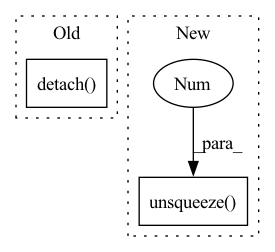

Pattern ID :447
Before Change
full_grad = torch.rand_like(ref_res)
ref_res.backward(full_grad)
grad_in_rank = torch.tensor_split(full_grad.detach() , world_size, 0)[rank]
model_res.backward(grad_in_rank)
// check gradAfter Change
full_grad = torch.rand_like(ref_res)
ref_res.backward(full_grad)
// grad_in_rank = torch.tensor_split(full_grad.detach(), world_size, 0)[rank]
model_res.backward(full_grad.unsqueeze(1 ) )
// check grad
ref_model_grad = torch.tensor_split(ref_model.weight.grad.detach().to_dense(), world_size, 1)[rank]In pattern: SUPERPATTERN
Frequency: 5
Non-data size: 2
Instances Fragment ID: 2469425
Project Name: hpcaitech/cachedembedding
Commit Name: 931406a3f99ef5e30fd6f7483dbe46bfedd72f5a
Time: 2022-06-27
Author: 34452939+zxgx@users.noreply.github.com
File Name: tests/colo_recsys_tests/embedding_bag_test.py
M Class Name: AnonimousClass
N Class Name: AnonimousClass
M Method Name: run_embedding_bag(1)
N Method Name: run_embedding_bag(1)
M Parent Class:
N Parent Class:
M File Name: tests/colo_recsys_tests/embedding_bag_test.py
N File Name: tests/colo_recsys_tests/embedding_bag_test.py
M Start Line: 18
M End Line: 76
N Start Line: 18
N End Line: 93
Before Change
colors = torch.nn.functional.grid_sample(
image, uv, align_corners=True
) // [B, C, N, 1]
colors = (
(colors[0, :, :, 0].permute(1, 0) + 1.0) * 0.5 * 255.0
).detach() .cpu() * visibility
// mesh = trimesh.Trimesh(verts.detach().cpu(), faces.detach().cpu(), process=False, maintains_order=True)
// mesh.visual.vertex_colors = colorsAfter Change
uv = uv * torch.tensor([1.0, -1.0]).type_as(uv)
colors = (torch.nn.functional.grid_sample(image, uv, align_corners=True)[
0, :, :, 0].permute(1, 0) + 1.0) * 0.5 * 255.0
colors[visibility == 0.0] = ((Meshes(verts.unsqueeze(0 ) , faces.unsqueeze(
0)).verts_normals_padded().squeeze(0) + 1.0) * 0.5 * 255.0)[visibility == 0.0]
return colors.detach().cpu() Fragment ID: 2469424
Project Name: yuliangxiu/icon
Commit Name: 0ee5047f5aca6f34e0c07601f7d7ea243206f568
Time: 2022-07-28
Author: yuliang.xiu@tuebingen.mpg.de
File Name: lib/common/render.py
M Class Name: AnonimousClass
N Class Name: AnonimousClass
M Method Name: query_color(4)
N Method Name: query_color(4)
M Parent Class:
N Parent Class:
M File Name: lib/common/render.py
N File Name: lib/common/render.py
M Start Line: 73
M End Line: 90
N Start Line: 72
N End Line: 84
Before Change
Used as part of the MDScaling wrapper if arg is passed. See below.
Angle Phi between planes: (Ca{-1}, N, Ca{0}) and (Ca{0}, N{+1}, C_a{+1})
ns = preds.t(-1, -2)[N_mask][1:].detach()
cs = preds.t(-1, -2)[CA_mask].detach()
// compute phis and count lower than 0s
phis_count = []
for i in range(cs.shape[0]):After Change
Used as part of the MDScaling wrapper if arg is passed. See below.
Angle Phi between planes: (Ca{-1}, N, Ca{0}) and (Ca{0}, N{+1}, C_a{+1})
preds_ = torch.cat([x[0].detach().unsqueeze(0 ) for x in preds], dim=0)
ns = torch.transpose(preds_, -1, -2)[:, N_mask][:, 1:]
cs = torch.transpose(preds_, -1, -2)[:, CA_mask]
// compute phis and count lower than 0s Fragment ID: 2469420
Project Name: lucidrains/alphafold2
Commit Name: a5676518abab65fd90fca7222208fe08de96cdc5
Time: 2021-01-06
Author: ericacaide1@gmail.com
File Name: utils.py
M Class Name: AnonimousClass
N Class Name: AnonimousClass
M Method Name: fix_mirrors_torch(4)
N Method Name: fix_mirrors_torch(3)
M Parent Class:
N Parent Class:
M File Name: utils.py
N File Name: utils.py
M Start Line: 147
M End Line: 154
N Start Line: 141
N End Line: 159
Before Change
Acls = get_diagonally_dominant_class(na)
xtrue = torch.rand(1,na,1).to(dtype).to(device)
A = Acls()
b = A(xtrue, A1, diag).detach() .requires_grad_()
def getloss(A1, diag, b):
fwd_options = {After Change
A = Acls()
M = Mcls()
biases = torch.rand(1,ncols).to(dtype).to(device)
b = (A(xtrue, A1, diag) - biases.unsqueeze(1 ) * M(xtrue, M1, mdiag)).detach().requires_grad_()
def getloss(A1, diag, b, biases, M1, mdiag):
fwd_options = { Fragment ID: 2469423
Project Name: xitorch/xitorch
Commit Name: b81a02162bdaf6277ca239f4307f7f69c70a3efe
Time: 2020-02-08
Author: firman.kasim@gmail.com
File Name: lintorch/tests/test_grads.py
M Class Name: AnonimousClass
N Class Name: AnonimousClass
M Method Name: test_grad_solve(2)
N Method Name: test_grad_solve(2)
M Parent Class:
N Parent Class:
M File Name: lintorch/tests/test_grads.py
N File Name: lintorch/tests/test_grads.py
M Start Line: 48
M End Line: 55
N Start Line: 48
N End Line: 79